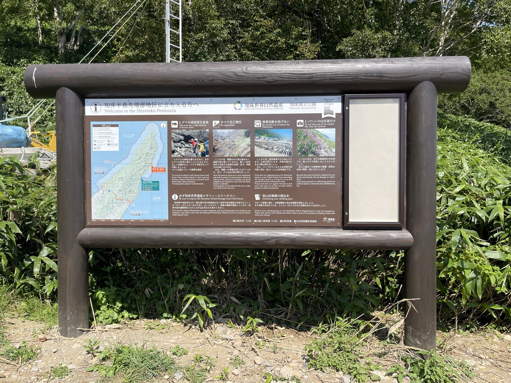
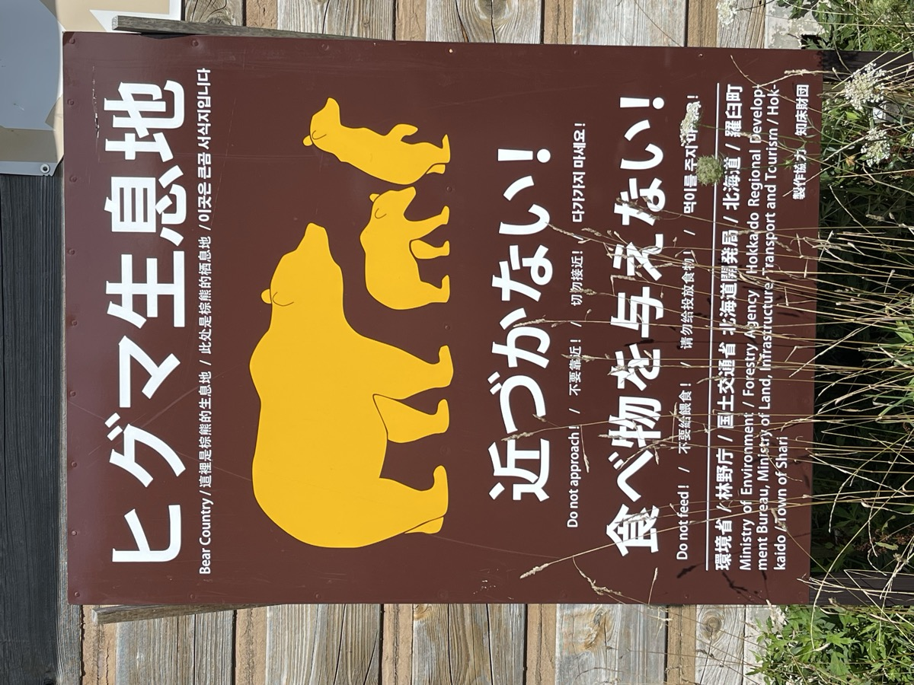
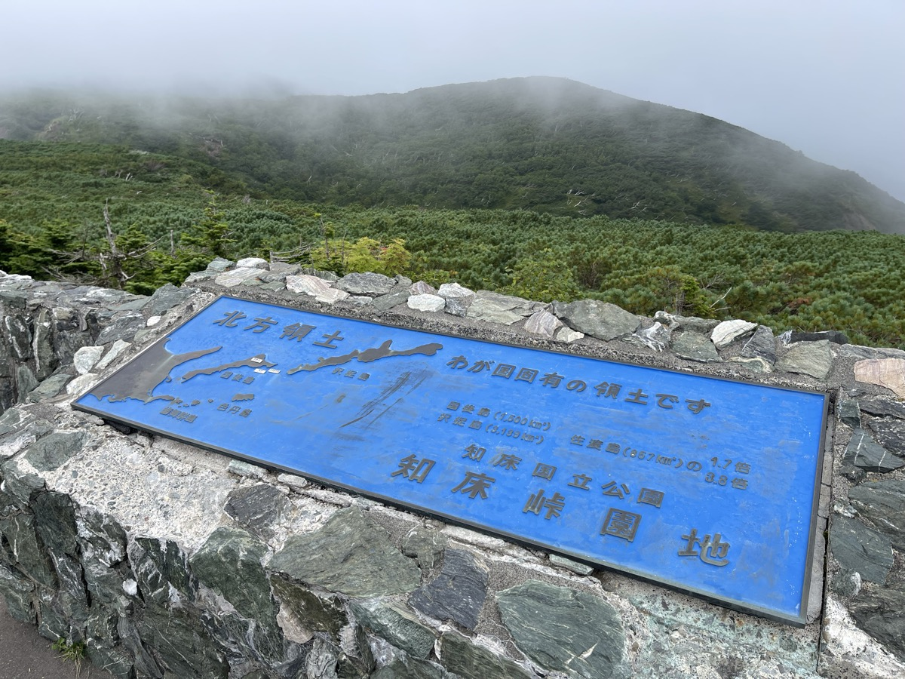
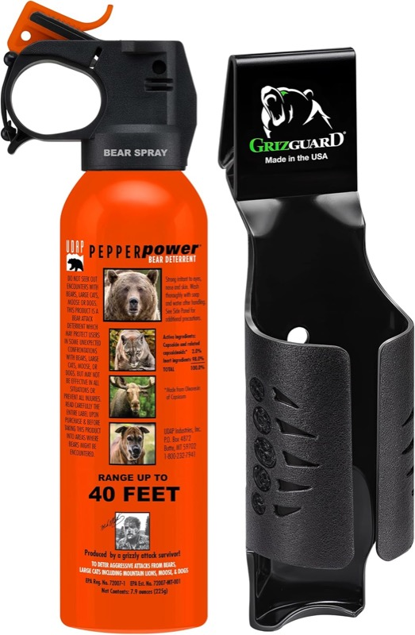

In August 2025 I crossed Hokkaido on an XSR900. One of the items I made sure to pack before leaving was bear spray.
Why I bought spray before leaving
It was my third trip to Hokkaido. The first, in 2021, was a five-day loop on an SR400. On that trip, in Monbetsu, I came face-to-face with a brown bear (Higuma). Heading up the mountain road to the Okhotsk Sky Tower at dusk to watch stars, a bear was standing in the road in front of me. The SR400's engine note had to have reached it; it didn't move. There wasn't room to U-turn on the slope. I waited two or three minutes; when the bear shifted to the side of the road, I squeezed past. The second trip, in 2022, was a 3-night, 4-day drive through southern Hokkaido. Since I wasn't on a bike, brown bears didn't really enter my thinking. The XSR900 trip was three years on, my third Hokkaido visit, and a loop including Shiretoko and the eastern side.
▶ The full story: bear encounter on a Monbetsu mountain road on an SR400
And there was one more piece of news in my head, just eight days before departure. On August 14, 2025, a 26-year-old man was killed by a brown bear on Mt. Rausu in Shiretoko. According to the Shiretoko Foundation's preliminary report, he was likely running while descending. The mother bear and her two cubs that dragged the victim were culled near the scene, but the incident itself doesn't go away.
Mt. Rausu and the Shiretoko Pass I planned to ride are on the same Shiretoko Peninsula. Walking into bear country without gear is a different decision now. So before leaving I bought a UDAP 12HP. There may not be many moments to use it while actually riding. But for walking around your inn, taking a break beside a parked bike — just having it on you is its own peace of mind.
What I felt at Shiretoko
Prefectural Road 87 from Rausu to Aidomari. The plan was to stop at the easternmost point of the Japanese mainland's road network, then cross the Shiretoko Pass. On a map, it's just the northern tip of a peninsula. On the ground, something becomes clear: this is the middle of brown bear habitat.
The sign that reads "Carrying bear spray is recommended"
I stopped in front of the information board at Aidomari. The Shiretoko Peninsula tip-area information board, written in Japanese and English. Reading down, this part stood out:

To avoid accidents with brown bears, act with proper knowledge and bear-safety measures.
* Carrying bear spray is recommended.
If they wrote "recommended," it's because the actual risk on the ground is high enough to warrant it. The wording isn't there to scare tourists — it's there because it's needed.
Brown bear habitat warnings
Other warning signs sat along the road too. A yellow bear silhouette and "ヒグマ生息地 / Bear Country."

The Shiretoko Peninsula is a UNESCO World Natural Heritage site. Behind its face as a tourist destination is a place where wildlife and people share close space. This isn't somewhere you can park the bike and step into the bushes for a casual restroom break.
Across the Shiretoko Pass
Back to Rausu from Aidomari, then over the Shiretoko Pass to Utoro. The pass at 740 m was inside fog.

Down past the pass at the Shiretoko Nature Center, I saw the brown bear taxidermy mount again. Something that big should normally be encountered up in the mountains; here it's behind glass. Picturing it alive in this same area changed how I imagined the rest of the ride.
UDAP 12HP — used by U.S. National Park Service rangers
For this XSR900 Hokkaido trip, I packed the UDAP 12HP from the start. The decision came from the SR400 trip experience and the recent rise in bear-attack news; I knew Shiretoko and the eastern side were brown-bear country. It's gear meant to never be used — but if you're riding Hokkaido's mountain roads, it's worth having.
It's a bear deterrent spray made by a manufacturer in Montana, USA. The model is one used by the U.S. National Park Service for grizzly response and has a track record. In Japan it's also considered effective for both Higuma (brown bears) and Tsukinowaguma (Asian black bears).
Why pick a "U.S. National Park Service issue" specifically? The market has plenty of cheap "bear sprays," but a closer look reveals that some are self-defense (anti-personnel) sprays, not bear-rated, while others have spray distance and capsaicin concentration that have never been verified against bears. "I tried it and it didn't work" is not something you can take back if you're being charged. UDAP 12HP costs more, but its effectiveness against bears is officially backed by U.S. National Park Service adoption. You're paying for reliability when it counts — that's the way I framed the choice.

UDAP 12HP Bear Spray (with holster)
~9 m range, ~4 sec spray time. Comes with a trekking holster you can hang on your hip. Cannot be brought on aircraft. Buying one in Hokkaido is quite difficult, so if you're going by ferry, buy in advance.
View on AmazonWhat riders heading to Hokkaido should pack
Camping gear, cold-weather kit, puncture repair kit. There are several lists of gear to think through for a Hokkaido tour. Bear spray sits, for me now, on the same level as those lists.
Ideally you never use it. But riding past gear that an official sign at the entrance to the Shiretoko Peninsula recommends carrying — and not having it — feels off. There was no head-on bear encounter on this trip in the end, but standing in front of the bear taxidermy and the warning signs, I was sure it was the right call.